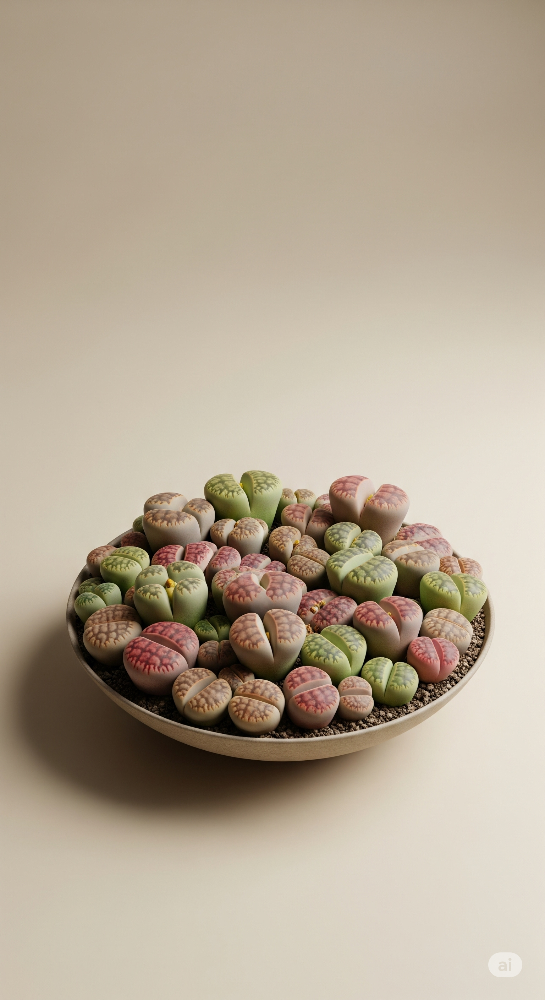

Pedra-viva
Lithops spp.

✅ Segura para gatos
☀️ Luz ideal: Luz plena ou muito intensa
üíß Rega: Muito moderada (deixar o solo secar completamente)
As "pedras-vivas" são suculentas fascinantes que se disfarçam como seixos naturais. Com formatos únicos e crescimento extremamente lento, são ideais para pequenos vasos decorativos e terrários iluminados.
üí° Curiosidade
Durante o crescimento, as folhas antigas se dividem para dar lugar a novas, num ciclo visualmente surpreendente.
← Voltar para Plantas